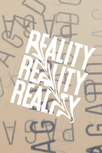
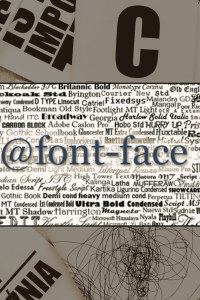

La historia de la
Tipografía digital
"La tipografía debe ser audible. Debe ser legible. Debe ser sentida."
Erik Spiekermann
(1990) La Revolución Tipográfica

La historia de la tipografía web se remonta a los primeros días de Internet a mediados de la década de 1990. En este periodo, las opciones tipográficas eran limitadas debido a las restricciones tecnológicas. Las primeras páginas web estaban limitadas a un conjunto básico de fuentes como Arial, Times New Roman y Verdana para garantizar la coherencia en diferentes dispositivos y navegadores.
Anteriormente, surgieron dos proyectos tipográficos significativos: uno realizado por Robin Nicholas para Monotype y otro por Matthew Carter para Bitstream.
Creada por Matthew en 1987
Creada por Nicholas en 1980
Ambos proyectos se destacan como ejemplos de referencia en el campo de la tipografía, mostrando avances tanto en legibilidad como en calidad de reproducción digital, donde la aparición del Apple Macintosh en 1984 revolucionó la manera de definir los procesos de trabajo en tipografía.
(1998) La Regla @fontface

La diversidad tipográfica en la web tuvo un comienzo desafiante con la versión 2 del lenguaje CSS. La introducción de la regla @font-face permitió a los navegadores descargar datos de fuentes, lo que posibilitaba el uso de prácticamente cualquier fuente en medios digitales, especialmente en sitios web.
Sin embargo, esta regla presentaba un problema significativo: la falta de protección contra la piratería. Como resultado, la regla @font-face fue temporalmente eliminada del lenguaje CSS 2.1 durante casi una década.
A finales de los años noventa, surgieron nuevas tecnologías como SIFR (Scalable Inman Flash Replacement) y SVG (Scalable Vector Graphics), que llenaron el vacío dejado por CSS 2.1. Estas técnicas permitieron el uso de cualquier fuente en sitios web sin requerir la compra de tipografías adicionales, disminuyendo las preocupaciones sobre la piratería tipográfica.
SVG (Scalable Vector Graphics)
SIFR (Scalable Inman Flash Replacement)
En 2008, con la llegada del lenguaje CSS 3, navegadores populares como Mozilla Firefox y Apple Safari volvieron a implementar la regla @font-face, convirtiendo la tipografía para la web en un recurso accesible para la mayoría de los usuarios del medio digital.
(2010) El futuro de la Tipografía Web
Hacia mediados y finales de la década de 2010, la tipografía web se convirtió en un aspecto crucial del diseño web. Las fuentes responsivas se volvieron estándar, adaptándose automáticamente a diferentes dispositivos y tamaños de pantalla. Además, técnicas avanzadas como la tipografía variable se desarrollaron en este período, permitiendo ajustar dinámicamente atributos como peso, ancho y altura de las letras.
En la actualidad, los diseñadores web tienen acceso a una amplia gama de fuentes personalizadas para mejorar la identidad visual de un sitio y garantizar una experiencia coherente en diversos dispositivos. La tipografía web se utiliza estratégicamente para guiar la atención del usuario y mejorar la comprensión del contenido, contribuyendo significativamente a la estética y usabilidad de los sitios en línea.